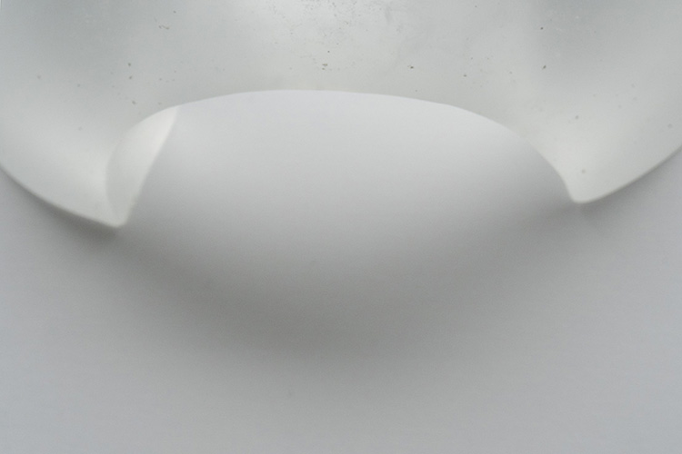
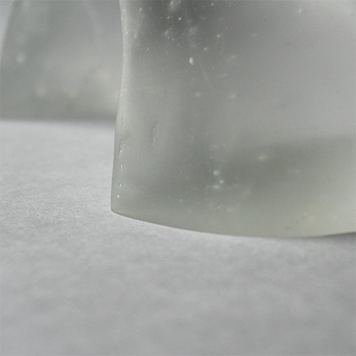
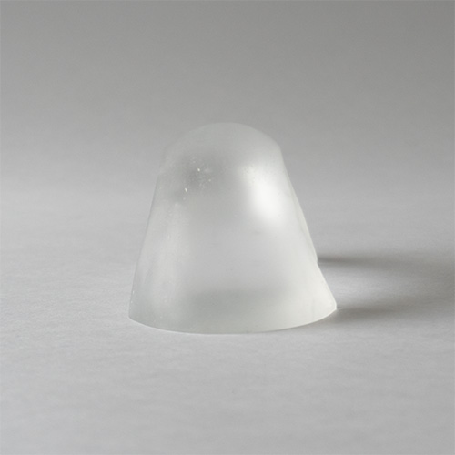

つなぐ
ガラス/キャスト
つなぐ
ガラス/キャスト
抽象的な形状で「つなぐ」ということを表現しました。
鋭い角を持ったアーチ状の形態によって、「繋ぐ」形に「隔てる」という機能も内包されていることを示しました。
ガラス特有の硬さや光沢感が、この形態の鋭さを際立たせています。また、光がガラスの内側に透け、中で柔らかく広がる様子は、外側の鋭い印象とは違った不思議な奥行きを与えています。




